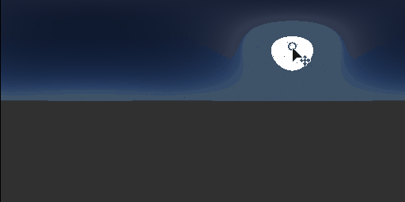

Physical Sun/Sky

Physical Sun/Sky
In: 3D View/HDRI Tools
Intermediate
Description
Physical Sun and Sky implementation based on Hosek-Wikie skylight model. Provides an excellent base for an artifical HDRI.
Parameters
- Sun Position:
range = [0,1]x[0,1] (longitude-latitude angles) - Turbidity: 1.0 - 10.0
Turbidity ranges from 1 to 10 - Albedo: 0.0 - 1.0
Albedo ranges from 0 to 1. - Ground Color: (Color value)
Color of the ground plane. - Exposure (EV): -1.0 - 4.0
Exposure value of resulting output. - Sun Size: 0.0 - 4.0
Scale of the Sun, any value different than 1 is non physically correct. Value has subtle effects! - Sun Intensity: 0.0 - 1.0
Intensity of sun disc. Sun disc is fairly small so effect is not immediately visible. - Sky Intensity: 0.0 - 1.0
Intensity of the sky. Also affects flaring of sun in the sky, not the disc itself.
Example Images
